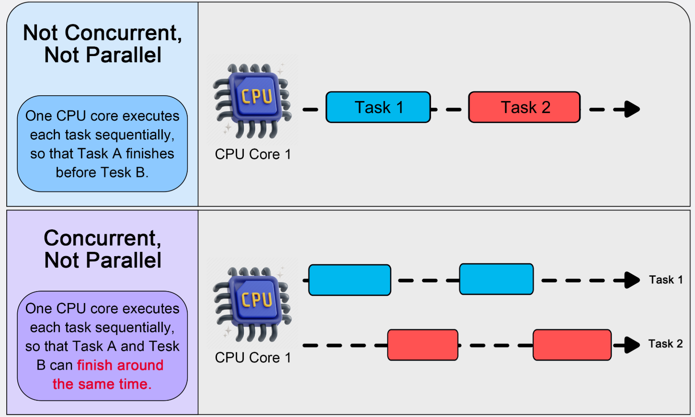
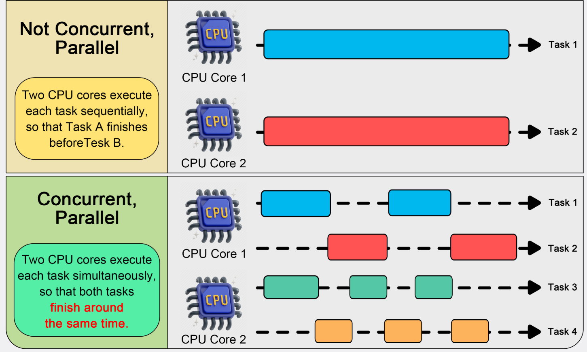
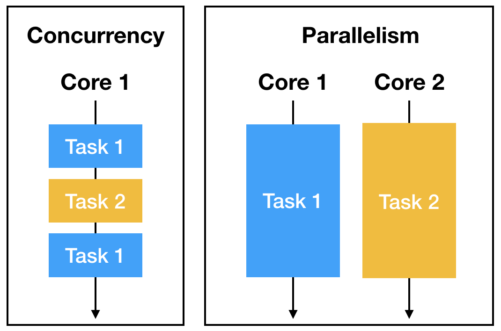

System Design Mastery
Master scalable systems with premium insights
⚡ Concurrency vs Parallelism - Handling Multiple Tasks vs Running Multiple Tasks Simultaneously
1️⃣ What is Concurrency?
Concurrency means:
- 🔄 Managing multiple tasks at same time, but not necessarily executing them at exact same moment
- 🏗️ It is about structure and task management
Example:
We have One CPU core and multiple tasks
Task A runs a little
CPU Switch to Task B
CPU Switch back to Task A
This is called context switching.
So tasks appear simultaneous, but actually:
Task A → Task B → Task C → Task A → Task B

📊 Concurrency: Task switching on single core
2️⃣ What is Parallelism?
Parallelism means:
- ⚡ Actually executing multiple tasks at same moment of time
Parallelism Requires:
- 🖥️ Multiple CPU cores
- 🔧 Multiple processors
Example:
Core 1 → Task A
Core 2 → Task B
Core 3 → Task C
Tasks truly run simultaneously.

📊 Parallelism: Multiple tasks running on different cores simultaneously
3️⃣ Why do these concepts exist?
They solve performance and responsiveness problems.
Concurrency solves:
- ⏳ Waiting problems (I/O, network calls)
- 💡 Efficient resource usage
Parallelism solves:
- 🔥 CPU-intensive computation
- ⚡ Heavy processing tasks
- 🚀 Faster execution
4️⃣ What breaks without them?
Without concurrency:
- 🥶 App freezes during long tasks
- 😞 Poor user experience
Without parallelism:
- ⏰ CPU tasks take longer
- 📉 Poor throughput
5️⃣ Real-world analogy
🍳 Kitchen Example
Concurrency:
One chef cooking 3 dishes:
- 🔪 Cuts vegetables
- 🍝 Then boils pasta
- 🥄 Then stirs sauce
- 🔄 Switches between tasks
One Chef handling many tasks by switching.
Parallelism:
Three chefs cooking:
- 👨🍳 Chef 1 → Vegetables
- 👩🍳 Chef 2 → Pasta
- 🧑🍳 Chef 3 → Sauce
True simultaneous work.
Many workers handling tasks at same time.
6️⃣ One common mistake
🚨 Thinking they are same.
Important difference:
Concurrency = Dealing with many tasks
Parallelism = Doing many tasks at once
- ✅ All parallelism is concurrency
- ❌ But not all concurrency is parallelism
7️⃣ Real app connection
📱 WhatsApp Example
1️⃣ Concurrency in WhatsApp
Imagine:
- 👥 1 million users sending messages at same time
- 🖥️ One server handles thousands of connections
What happens?
The server:
- 📨 Receives message from User A
- 🔄 Switches to User B
- 🔄 Switches to User C
- 🔄 Switches back
It handles many users by switching quickly.
That is concurrency.
Even if one CPU core is used, it manages many chats.
👉 WhatsApp uses async I/O for this.
2️⃣ Parallelism in WhatsApp
Now imagine:
- 🖥️ Multiple CPU cores
- 🖥️ Multiple servers
- 🌍 Distributed across regions
- 🖥️ Server 1 handles some users
- 🖥️ Server 2 handles others
- ⚡ Core 1 processes message A
- ⚡ Core 2 processes message B
This is true parallelism.
Messages are processed simultaneously.
🧠 Quick Comparison Table

📊 Visual comparison of concurrency vs parallelism
🎯 Summary
Concurrency is about managing multiple tasks efficiently, while parallelism is about executing multiple tasks simultaneously using multiple processors.
Concurrency handles many connections using async I/O